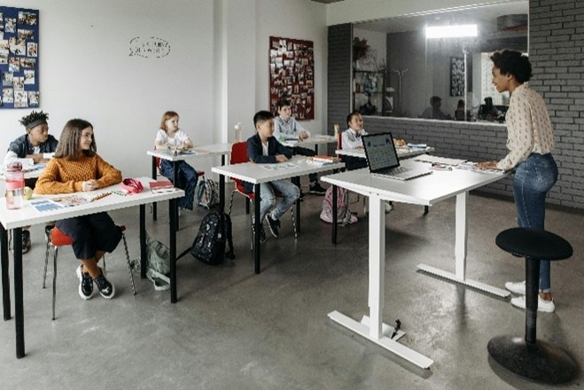
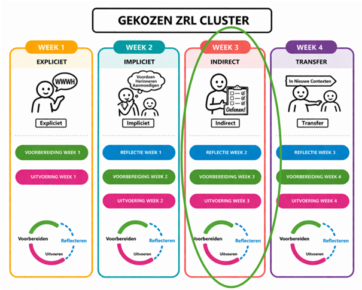
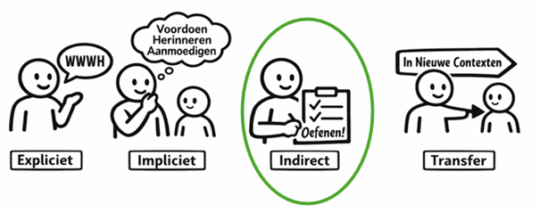
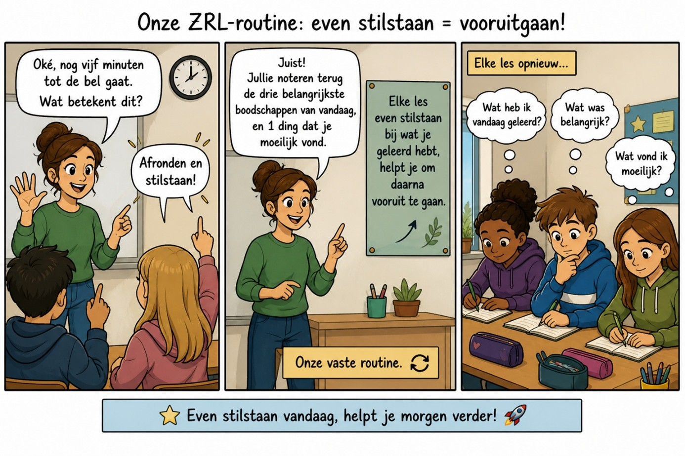
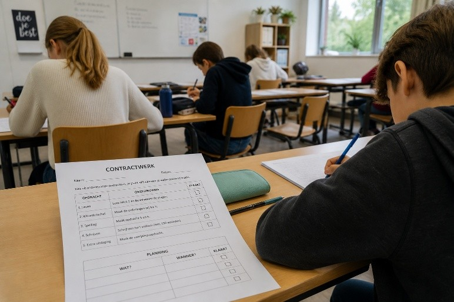
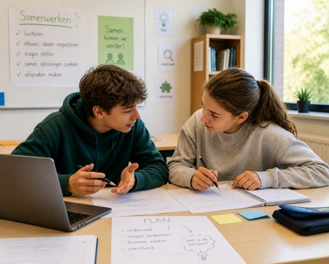

CYCLUS 2 – WEEK 3
Indirecte ondersteuning
⏱ Tijdsindicatie: max. 60 minuten
Deze week nemen we de ondersteuningsvorm indirecte ondersteuning onder de loep.
1. Even terugblikken
A. Overzicht

Vorige week:
- Zoomden we dieper in op de 4 manieren van impliciete ondersteuning
- Reflecteerden we over wat we hier al frequent en minder frequent rond doen in onze klas
- Kozen we een aantal mogelijkheden uit het reflectieformulier om in onze lessen te integreren (voorbereidingsfase)
- & gingen we vol goede moed aan de slag met de leerlingen in onze klas (uitvoeringsfase)
B. Leerdagboek

Deze week:
- staan we allereerst in ons leerdagboek stil bij hoe ons experiment gelopen is. Wat lukte goed? Wat lukte minder goed? Wat leren we hieruit? (reflectiefase)
- zetten we onze motivatie voor de nieuwe week scherp
- en nemen we de volgende ondersteuningsvorm onder de loep: indirecte ondersteuning!
Ga nu eerst naar je leerdagboek via deze link (sla het eerst op jouw pc op voor je erin werkt) of via de bijlage bij de mail.
Klik hier voor het leerdagboek2. Korte herhaling
Vorige week exploreerden we wat impliciete ondersteuning inhoudt of kan inhouden.
We frissen dit even op door middel van een korte situatieschets.
De bijhorende vraag is:
Welke manieren van impliciete ondersteuning van ZRL herken je in volgende les?
Kies uit de vier mogelijkheden:
- 1 Modelleren (de leerkracht toont de vaardigheid)
- 2 Hardop denken (de leerkracht verwoordt zijn denkproces)
- 3 Aanmoedigen of herinneren (de leerkracht stimuleert leerlingen om de vaardigheid te gebruiken)
- 4 Bevragen (de leerkracht zet leerlingen aan het denken)
👉 Check daarna je antwoord.
Geen probleem als je nog niet alles herkent — het doel is vooral om breder te leren kijken naar hoe ZRL ondersteund wordt in de klas.

📘 Situatieschets
De leerlingen maken in de klas een reeks wiskundeoefeningen.
De leerkracht noteert op het bord:
- Voorbeeld
- Oefeningen
- 3.1
- 3.2
- 3.3
Dan zet hij eerst een gelijkaardige oefening als voorbeeld op het bord en lost die stap voor stap op, terwijl hij hardop denkt:
“Oké, wat is hier de eerste stap? … Hier moet ik opletten, want hier maak ik vaak fouten … En dan de laatste stap.”
Hij zet een vinkje bij het voorbeeld:
“Zo, de rest is voor jullie. Vink telkens af wanneer je een oefening klaar hebt.”
De leerlingen gaan zelfstandig aan de slag. De leerkracht loopt rond.
Na 10 minuten projecteert hij de oplossing van de eerste oefening (met tussenstappen) en zegt:</p>
“Kijk even na: zit je op de goede weg?
Heb je alle stappen gebruikt?
Waar liep het moeilijk? Neem dat mee naar de volgende oefeningen.
En vergeet niet telkens af te vinken wanneer je een oefening klaar hebt”
Tien minuten voor het einde van de les toont hij de oplossingen.
Hij vraagt de leerlingen om te noteren:
- hoeveel oefeningen ze gemaakt hebben
- hoeveel er juist waren
Daarna maakt hij nog één oefening stap voor stap op het bord en vraagt:
“Heb je dezelfde stappen gebruikt?
Waar heb je misschien stappen overgeslagen of foutjes gemaakt?”
Tot slot vraagt hij:
“Wat neem je mee naar de volgende keer dat je oefent?”
Klik hier voor het antwoord op de vraag
Wanneer is er sprake van modelleren of zelf laten zien, hardop denken, aanmoedigen of herinneren of bevragen?
Antwoord:
In deze situatie zien we de vier manieren om impliciet te ondersteunen terug komen.
- 1. Modelleren of zelf de vaardigheid laten zien: De leerkracht schrijft op wat het doel is van de les, namelijk eerst een voorbeeld bespreken, en dan oefeningen maken. Hij kruist het aan als hij het voorbeeld heeft uitgelegd. Hij doet het dus voor in zijn handelen. (ZRL-vaardigheid: doelen stellen)
- 2. Hardop denken of het denkproces modelleren: Wanneer hij het voorbeeldje uitlegt verwoordt hij hardop zijn denken. Alle tussenstappen worden helder uitgelegd. (ZRL vaardigheid: plannen/opdelen in stappen en taakstrategie)
- 3. Aanmoedigen om de vaardigheid te gebruiken of herinneren aan de vaardigheid: De leerkracht moedigt de leerlingen aan om ook zelf telkens af te checken wanneer ze een oefening gemaakt hebben (ZRL-vaardigheid: zelfregistratie). Bij het stopmomentje moedigt de leerkracht de leerlingen aan om zichzelf te gaan monitoren (ZRL-vaardigheid: zelfmonitoring). Hij moedigt op het einde ook aan zichzelf te gaan evalueren. Bij deze momenten zet hij ook de leerlingen aan het denken (zie puntje 4).
- 4. Bevragen of aan het denken zetten: De leerkracht zet de leerlingen aan het denken rond wat mogelijke oorzaken zijn van fouten (ZRL-vaardigheid: zelfevaluatie en attributie).
3. Vooruitkijken – opzet van de week
Deze week nemen we de ondersteuningsvorm ‘indirecte ondersteuning’ onder de loep.
We stonden reeds stil bij vorige week (reflectie week 1) en gaan nu dieper in op de voorbereidingsfase rond indirecte ondersteuning, namelijk
- WAT indirecte ondersteuning is,
- WAAROM dit belangrijk is,
- HOE we hiermee aan de slag kunnen in ons klas,
- BEREIDEN we dit VOOR (voorbereidingsfase) &
- VOEREN we dit uit in onze klas (uitvoeringsfase)

4. Indirecte ondersteuning

A. Teaser

De leerkracht in deze strip creëerde een routine in haar klas, waarbij ze elke les de leerlingen laat stilstaan bij wat ze geleerd hebben en wat ze moeilijk vonden.
De leerlingen doen aan zelfevaluatie dus. Ze evalueren wat ze mee hebben van de les. Tegelijkertijd moedigt de leerkracht de leerlingen ook aan om aan retrieval practice te doen, te proberen herinneren wat je geleerd hebt, wat een veel effectievere strategie is dan bvb. telkens maar dezelfde leerstof herlezen.
Als de leerkracht hetgeen de leerlingen moeilijk vonden inventariseert en hiermee de volgende les begint kan ze hier ook op voortbouwen. Dit komt ook haar EIGEN zelf-evaluatie ten goede: waarop moet ik nog meer inzetten in deze klas?
MAAR… Als we nu eens even uitzoomen en dit breder bekijken. Wat zien we dan?
We zien dat de leerkracht de leerlingen eigenlijk veelvuldig laat oefenen met zelfevaluatie, zodat het na verloop van tijd een automatisme wordt.
Daar gaat indirecte ondersteuning over, over het creëren van een rijke leeromgeving waarin veel oefenkansen tot ZRL zitten, met oog op automatisatie!
B. Indirecte ondersteuning: wat en waarom?
Indirecte ondersteuning gaat over het creëren van een krachtige leeromgeving die onze leerlingen kansen biedt om te oefenen met ZRL en zodoende het via directe ondersteuning (expliciet en impliciet) aangeleerde verder te automatiseren.
De nieuwe leidraad ‘metacognitie en zelfregulerend leren’ van Leerpunt (2026) spreekt hierbij over twee zaken, namelijk:
- Het creëren van een bevorderlijke leercontext, met autonomie én structuur!
- Het geven van betekenisvol schoolwerk, met uitdagende leertaken en ondersteunende hulpmiddelen
Dit klinkt allemaal nog wat abstract. Griet en Nathalie proberen het te verduidelijken in een nieuwe home video.

C. Indirecte ondersteuning: hoe?
Hoe kunnen we leerlingen indirect ondersteunen?
De 5 belangrijkste aandachtspunten in 3 stappen:
STAP 1
Belangrijk bij indirecte ondersteuning is dat leraren hun leerlingen vooral genoeg OEFENkansen bieden door enerzijds stap voor stap meer eigenaarschap en keuzevrijheid bij de leerlingen te leggen, en anderzijds door een stimulerende leeromgeving te creëren waarin de leerling betrokkenheid voelt, er duidelijke ROUTINES zijn en constructieve FEEDBACK volgt.
Voorbeeld: contractwerk of begeleid zelfstandig werk biedt oefenkansen voor ZRL, mits goed ondersteund. Dit kan indirect door routines zoals bvb. een gezamenlijk opstartmomentje, de afspraak om de taken in de agenda te noteren en af te vinken, een gezamenlijk afrondmomentje,… Daarnaast is het belangrijk dat de begeleidende leerkracht ook feedback geeft wanneer die merkt dat de leerlingen snel afgeleid zijn of de taken nooit af geraken op het voorziene lesuur.

STAP 2
Vervolgens komt bij indirecte ondersteuning CO-REGULATIE voor de leerlingen (!) in beeld.
ZRL-vaardigheden leer je in co-regulatie met een duopartner, je medeleerlingen, je leerkracht en de klas als geheel. Bij de directe ondersteuning was voornamelijk de leerkracht aan zet. Nu gaat het ook meer over samenwerken, ideeën uitwisselen, samen plannen en monitoren met medeleerlingen, waardoor men van elkaar kan gaan leren.
Voorbeeld: In een groepswerk moeten leerlingen een filmpje maken waarin ze een groot deel van de geziene vocabulaire van Frans verwerken. Ze krijgen een sjabloon dat hen helpt om
- te brainstormen over wat ze in hun filmpje aan bod willen laten komen (idee)
- een plan te maken met tussenstappen rond de aanpak van het filmpje & hoe ze gaan bijhouden of de gevraagde woorden allemaal aan bod komen
- het plan vervolgens uit te voeren en het filmpje te maken
- te evalueren of ze in hun opzet geslaagd zijn en alle vocabulaire effectief in het filmpje aan bod komt.
Wist-je-datje: Leren van medeleerlingen lijkt tot leerwinst te leiden. Uit de toolkit van leerpunt blijkt dat zowel peer tutoring als coöperatief leren tot heel wat leerwinst leidt.

STAP 3
Tot slot spreekt men bij indirecte ondersteuning over betekenisvol schoolwerk, met voldoende uitdaging, ondersteund door hulpmiddelen en TOOLS die als houvast dienen om de uitdaging aan te gaan. Idealiter wordt deze ondersteuning geleidelijk aan afgebouwd.
Voorbeelden tools: een doelenformulier om in te vullen en af te checken, een studieplanner om in te vullen, een rubric om zichzelf in te schatten en naast de inschatting van de leerkracht te leggen,…
Samengevat
Hoe ondersteun je leerlingen indirect?
- Laat hen veelvuldig OEFENEN volgens een vaste structuur.
- Ondersteun hen door in te zetten op CO-REGULATIE &
- door hulpmiddelen of TOOLS aan te bieden.
- Voorzie een ROUTINE &
- zorg voor FEEDBACK (op de ZRL-vaardigheden!).
D. Planning : wanneer en hoe
Hoe gaan we deze week (en de daarop volgende weken) aan de slag met indirecte ondersteuning?
Een inspiratiegids helpt ons terug op weg.
In week 1 koos je een werkvorm rond een ZRL- vaardigheid uit, waar je met je klas mee aan de slag ging en expliciete ondersteuning aan koppelde.
Nu bekijken we hoe je op die expliciete ondersteuning van toen kan verder bouwen door middel van indirecte ondersteuning.
Hoe gebruik je de inspiratiegids?
Nathalie neemt je even mee in het document. Klik hier voor de korte video.
5. Aan de slag
Volg dit stappenplan
- Download hieronder de inspiratiegids
- Lees de eerste 3 pagina’s.
- Zoek naar het cluster ZRL-vaardigheden waar jij rond werkt (tip: gebruik ctrl + F om snel jouw cluster te vinden).
Overzicht 6 clusters:
Voorbereidingsfase: taakanalyse en zelfmotivatie
Uitvoeringsfase: zelf-controle en zelf-observatie
Reflectiefase: zelf-beoordeling en zelf-reactie
- Lees de voorbeelden of mogelijkheden waarop je de door jou gekozen vaardigheden indirect kan ondersteunen en laat je inspireren.
- Kies of je één van de beschreven mogelijkheden verder zal uitwerken OF er zelf eentje bedenkt aan de hand van de stappen op pagina 3 van de gids EN voortbouwend op de gekozen werkvorm uit week 1.
- Werk verder uit in je dagboek en ga aan de slag in jouw klas.
Noot: indirecte ondersteuning gaat over (veelvuldig) oefenen en het inbouwen van routines. Je zal in deze beperkte tijd nog niet veelvuldig kunnen oefenen. Verwacht dus nog niet te snel resultaat!
Vooruitblik
Deze week ga je aan de slag rond indirecte ondersteuning. Volgende week, in week 4, bekijken we hoe dit verlopen is (reflectie week 3). We gaan dan verder in op de laatste ondersteuningsvorm, namelijk transfer en bereiden het terugkoppelingsmoment van 26 mei voor.
Tot dan!
Bronnen:
- Leerpunt. (2026). Leidraad Metacognitie en zelfregulerend leren. https://leerpunt.be/files/leidraden/leerpunt-leidraad-metacognitie-en-zrl-v202603.pdf
- Drok, H., Kneyber, R. & Devid, V. (Eds). (2024). ReguLEER! Een pedagogisch-didactische verkenning van zelfregulerend leren. TELOS Uitgevers.
- Last, B. & Bransen, D. (2025). Dat doe je toch niet alleen?! Van zelfregulerend leren naar samen (regu)leren. Boom.